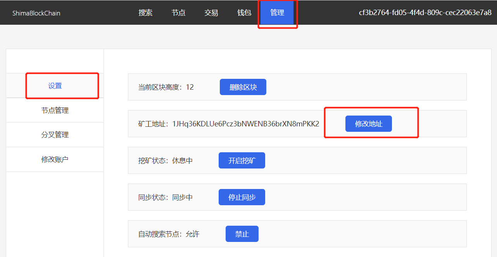
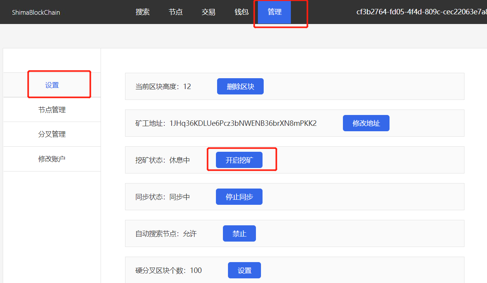
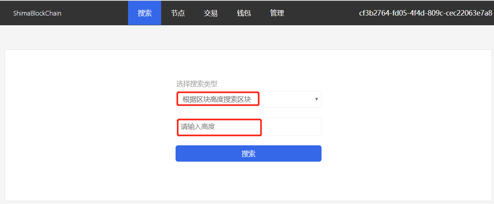
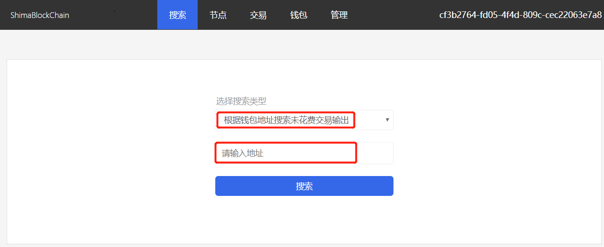

Shima BlockChain 使用手册
Github地址
问题
默认网站管理员账户
登录系统
钱包是什么
怎么生成钱包
默认矿工钱包账户
设置矿工钱包账户
如何进行转账交易
启动/关闭挖矿
查询区块信息
查询账户余额
github地址
https://github.com/chennj/ShimaBlockChain
默认网站管理员账户
默认用户名admin_chennj
默认密码Uskini123!
请及时修改默认管理员账户与密码
登录系统
打开网址http://localhost:8444/login.html，输入管理员账号与密码。
钱包是什么
在区块链网络里进行转账、收账的账号。就像银行卡的号码。
怎么生成钱包
打开网址http://localhost:8444/wallet.html，点击[生成钱包按钮]。
默认矿工钱包账户
系统第一次启动后，会自动生成一个钱包。钱包保存在应用安装目录里的InitMiner.txt文件里。
矿工挖矿成功后，区块链网络会自动将奖励发送到矿工的钱包里。
设置矿工钱包账户
系统默认分配了一个矿工账户给用户，当然用户可以主动生成一个钱包作为矿工账户。

如何进行转账交易？
打开网址http://localhost:8444/transaction.html，按照要求操作，进行转账。
启动/关闭挖矿

查询区块信息

查询账户余额
